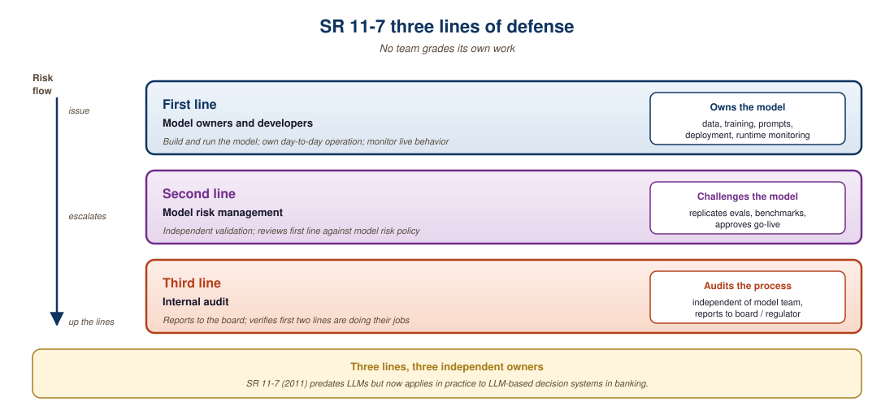

Governance without engineering is policy theater. Engineering without governance is an audit waiting to happen.
A Steadfast Guard, Governance-Weary AI Agent
Enterprise AI governance requires structured frameworks that map every LLM deployment to a risk classification, assign ownership, and maintain auditable records. Established frameworks like SR 11-7 (the US Federal Reserve's 2011 guidance on model risk management for banks, which introduced the three-lines-of-defense pattern this section returns to), NIST AI RMF, and ISO 42001 provide the scaffolding. Building on the regulatory landscape from Section 47.1 and the enterprise application patterns from Section 27.1, this section covers how to build a practical AI governance program that satisfies regulators while remaining lightweight enough for engineering teams to follow.
Prerequisites
Before starting, make sure you are familiar with the regulatory landscape from Section 47.1, the evaluation metrics that underpin audit processes, and the interpretability techniques from Section 10.1 that support model explainability requirements.
53.3.1 Governance Frameworks Comparison
| Framework | Origin | Scope | Key Contribution |
|---|---|---|---|
| SR 11-7 | US Federal Reserve | Banking / Financial | Three lines of defense, independent validation |
| NIST AI RMF | US NIST | Cross-sector | Govern, Map, Measure, Manage lifecycle |
| ISO 42001 | ISO | International | AI management system certification |
| EU AI Act | European Parliament | EU market | Risk-based obligations, conformity assessment |
The NIST AI Risk Management Framework organizes governance into four core functions. As shown in Figure 53.3.1, Govern provides the overarching structure while Map, Measure, and Manage form a continuous cycle.
Mental Model: The Flight Safety System. LLM risk governance resembles the aviation safety framework. Govern sets the flight rules and certifications. Map identifies the routes and weather conditions (risks). Measure tracks altitude, speed, and fuel (metrics and monitoring). Manage handles turbulence and course corrections (mitigation and response). Just as airlines maintain exhaustive flight logs and conduct regular safety audits, AI governance requires a model inventory, risk classifications, and audit trails. The analogy breaks down in one important way: aviation safety has decades of standardized practice, while AI governance frameworks are still maturing rapidly.
Content provenance standards like C2PA (Coalition for Content Provenance and Authenticity) embed cryptographic signatures into AI-generated images, audio, and video, creating an unforgeable trail of origin. Adobe, Microsoft, and major camera manufacturers have adopted C2PA, making it the leading candidate for combating deepfakes at scale.
Governance becomes especially important in organizations with multiple LLM deployments. Without a centralized inventory, teams often deploy models with overlapping capabilities but inconsistent safety standards. One team's customer-facing chatbot might have rigorous guardrails and monitoring from Section 62.1, while another team's internal assistant operates with no safety controls. The model inventory described below provides the visibility needed to enforce consistent governance across the organization.
Start your model inventory today, even if it is just a spreadsheet. Record the model name, provider, version, deployment date, owning team, and risk tier for every LLM in production. Teams that wait until they have 20 or more deployments before creating an inventory find that half their models are undocumented, some are running deprecated versions, and nobody knows who owns the one handling customer data. A simple inventory prevents governance surprises.
53.3.2 Model Inventory and Risk Classification
A model inventory tracks every LLM deployment in the organization, its risk tier, ownership, and review status. Code Fragment 53.3.1 below shows how to implement a risk-classified model inventory with automated review flagging.
"""LLM governance entry that validates with Pydantic and emits tags for MLflow.
Production model registries (MLflow Model Registry, Weights & Biases, SageMaker
Model Cards) are where regulated teams put their model inventory. This fragment
shows the data layer: a Pydantic schema that validates each entry, computes the
EU AI Act risk tier from use case + data sources, and emits a dict ready to
POST to MLflow's set-model-version-tag endpoint.
"""
from datetime import datetime, timedelta
from enum import Enum
from typing import Literal
from pydantic import BaseModel, Field, computed_field, field_validator
class RiskTier(str, Enum):
LOW = "low"
LIMITED = "limited"
HIGH = "high"
UNACCEPTABLE = "unacceptable"
# EU AI Act risk taxonomy: a use case maps to its baseline tier. In a real
# deployment this dict is curated by the legal / compliance team.
USE_CASE_RISK = {
"customer_service_chatbot": RiskTier.LIMITED,
"credit_scoring": RiskTier.HIGH,
"biometric_categorization": RiskTier.HIGH,
"medical_diagnosis": RiskTier.HIGH,
"social_scoring": RiskTier.UNACCEPTABLE,
"content_recommendation": RiskTier.LIMITED,
"internal_search": RiskTier.LOW,
"code_completion": RiskTier.LOW,
}
# Data-source modifiers can bump the tier UP. PII processing escalates
# Limited -> High under the EU AI Act risk model.
PII_DATA_SOURCES = {"customer_records", "medical_records", "biometric_data",
"financial_transactions", "minor_users"}
def compute_risk_tier(use_case: str, data_sources: list[str]) -> RiskTier:
"""Map a (use_case, data_sources) pair to an EU AI Act tier."""
base = USE_CASE_RISK.get(use_case, RiskTier.LIMITED)
if base == RiskTier.UNACCEPTABLE:
return base
has_pii = bool(set(data_sources) & PII_DATA_SOURCES)
if base == RiskTier.LOW and has_pii: return RiskTier.LIMITED
if base == RiskTier.LIMITED and has_pii: return RiskTier.HIGH
return base
# Review cadence per tier (regulator expectation, not law).
REVIEW_INTERVAL = {
RiskTier.LOW: timedelta(days=365),
RiskTier.LIMITED: timedelta(days=180),
RiskTier.HIGH: timedelta(days=90),
RiskTier.UNACCEPTABLE: timedelta(days=0), # do not deploy
}
class ModelInventoryEntry(BaseModel):
"""Production model-registry record, validated by Pydantic."""
model_id: str = Field(pattern=r"^LLM-[A-Z]{2,4}-\d{3}$")
model_name: str
use_case: str
owner_email: str = Field(pattern=r"^[\w.+-]+@[\w-]+\.[\w.-]+$")
deployment_date: datetime
last_validation: datetime
data_sources: list[str] = Field(min_length=1)
regulations: list[Literal["GDPR", "EU AI Act", "HIPAA", "SOX", "PCI-DSS"]]
@field_validator("last_validation")
@classmethod
def validation_not_before_deployment(cls, v, info):
dep = info.data.get("deployment_date")
if dep and v < dep:
raise ValueError("last_validation cannot precede deployment_date")
return v
@computed_field
@property
def risk_tier(self) -> RiskTier:
return compute_risk_tier(self.use_case, self.data_sources)
@computed_field
@property
def next_review(self) -> datetime:
return self.last_validation + REVIEW_INTERVAL[self.risk_tier]
@computed_field
@property
def overdue(self) -> bool:
return self.next_review <= datetime.utcnow()
def to_mlflow_tags(entry: ModelInventoryEntry) -> dict[str, str]:
"""Format an entry as MLflow Model Registry version tags.
Each tag can be set via mlflow.client.set_model_version_tag(...) or
POSTed to /api/2.0/mlflow/model-versions/set-tag from any language.
"""
return {
"governance.risk_tier": entry.risk_tier.value,
"governance.owner": entry.owner_email,
"governance.use_case": entry.use_case,
"governance.regulations": ",".join(entry.regulations),
"governance.next_review": entry.next_review.date().isoformat(),
"governance.overdue": str(entry.overdue).lower(),
}
# Demo: register two models that differ ONLY in their data sources. The
# PII bump escalates the tier from LIMITED to HIGH and shrinks the review
# window from 180 to 90 days.
entry_no_pii = ModelInventoryEntry(
model_id="LLM-CS-001",
model_name="Customer Support Bot v2",
use_case="customer_service_chatbot",
owner_email="ml-platform@example.com",
deployment_date="2026-01-15T00:00:00",
last_validation="2026-02-01T00:00:00",
data_sources=["public_faq", "knowledge_base"],
regulations=["GDPR", "EU AI Act"],
)
entry_with_pii = entry_no_pii.model_copy(update={
"model_id": "LLM-CS-002",
"data_sources": ["customer_records", "knowledge_base"],
})
for e in (entry_no_pii, entry_with_pii):
print(f"{e.model_id}: tier={e.risk_tier.value:8s} "
f"next_review={e.next_review.date()} overdue={e.overdue}")
print()
print("MLflow tags for", entry_with_pii.model_id + ":")
for k, v in to_mlflow_tags(entry_with_pii).items():
print(f" {k}: {v}")use_case + data_sources rather than hand-set. The two demo entries differ only in their data sources; adding PII data bumps the tier from limited to high and the review cadence from 180 days to 90 days. to_mlflow_tags() produces the dict you would POST to MLflow's model-version-tag endpoint to wire the governance metadata into your existing model registry.Audit Trail Implementation
An immutable audit trail records every LLM interaction with hash-chaining so that any tampering with historical records is detectable. Code Fragment 53.3.2 below implements this pattern.
import json, hashlib
from datetime import datetime
class AuditTrail:
"""Immutable audit log for LLM interactions."""
def __init__(self):
self.entries = []
def log(self, request_id: str, model: str, input_text: str,
output_text: str, user_id: str, metadata: dict = None):
entry = {
"request_id": request_id,
"timestamp": datetime.utcnow().isoformat(),
"model": model,
"user_id": user_id,
"input_hash": hashlib.sha256(input_text.encode()).hexdigest()[:16],
"output_hash": hashlib.sha256(output_text.encode()).hexdigest()[:16],
"metadata": metadata or {},
}
# Chain entries for tamper detection
if self.entries:
prev_hash = hashlib.sha256(
json.dumps(self.entries[-1]).encode()
).hexdigest()[:16]
entry["prev_hash"] = prev_hash
self.entries.append(entry)
return entry
def verify_chain(self) -> bool:
for i in range(1, len(self.entries)):
expected = hashlib.sha256(
json.dumps(self.entries[i-1]).encode()
).hexdigest()[:16]
if self.entries[i].get("prev_hash") != expected:
return False
return TrueThe hash-chained audit trail creates an immutable record of every LLM interaction.
